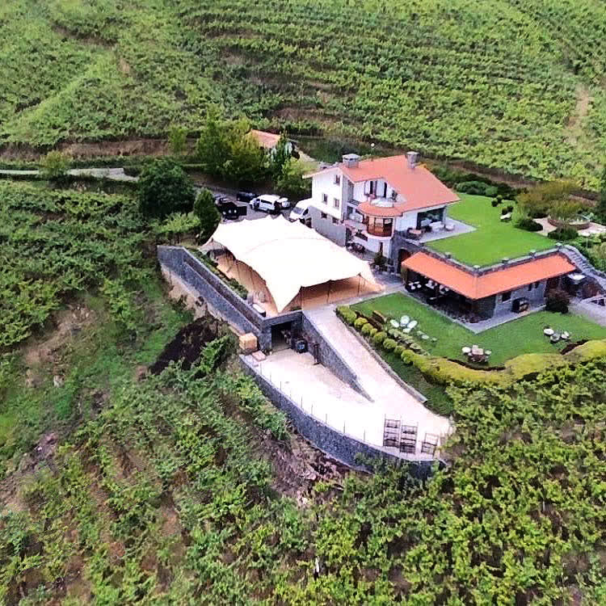
Donde la tierra abraza el mar
Bodega familiar con Denominación de Origen Getariako Txakolina. Tres generaciones cultivando las mejores laderas de Zarautz, Getaria y Aia.
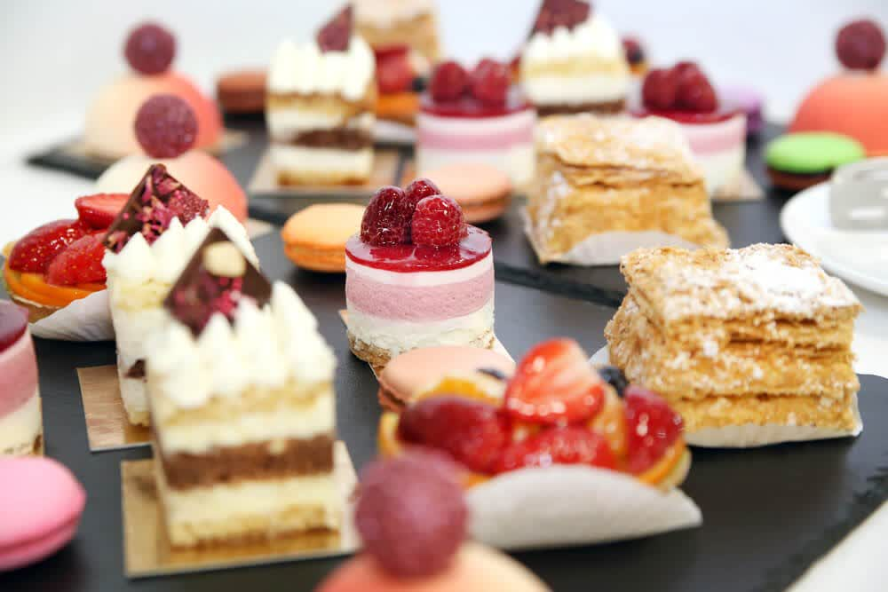
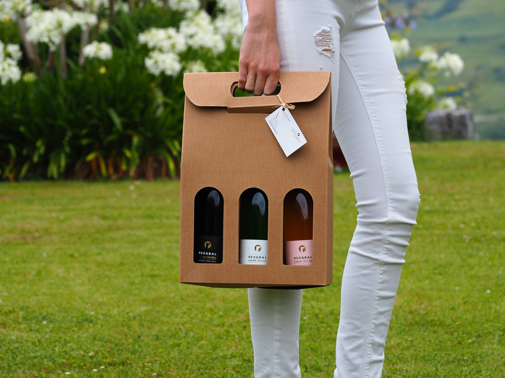
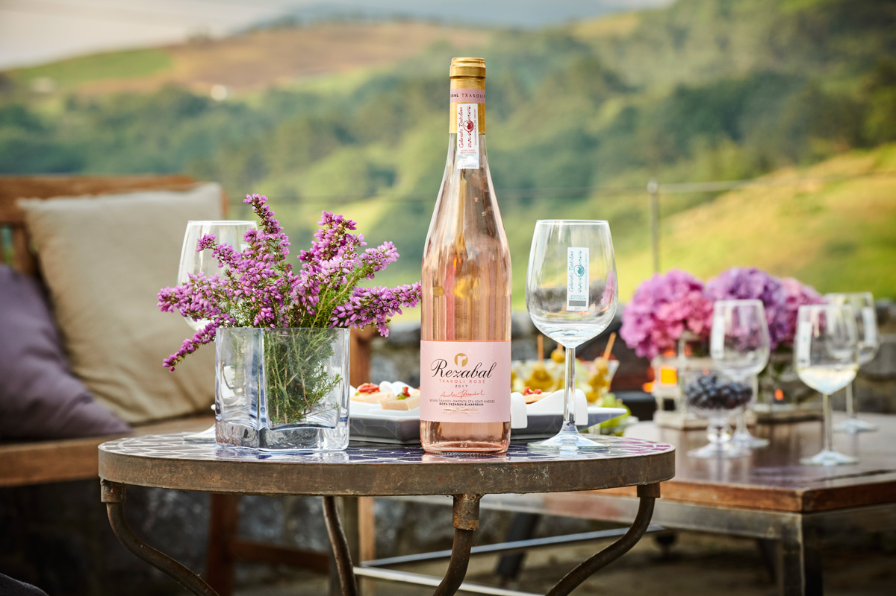
Antes nuestros abuelos, después nuestros padres, y ahora los hijos
Una hermosa herencia que exige no solo dedicación, sino afecto y cariño. El aitona puede estar tranquilo: volveran nuevas podas, se plantaran nuevas cepas y seguiran fluyendo los mostos.
La bodega y sus vinedos
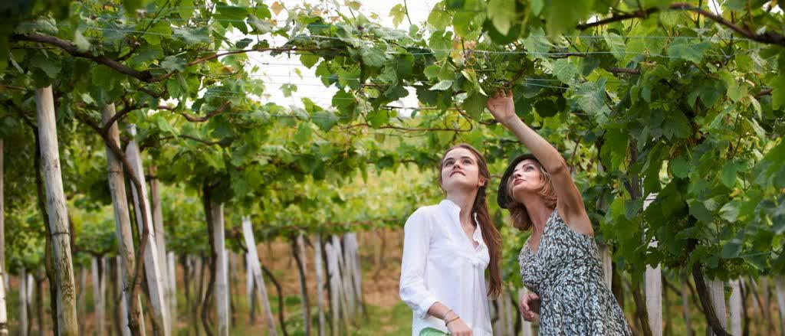
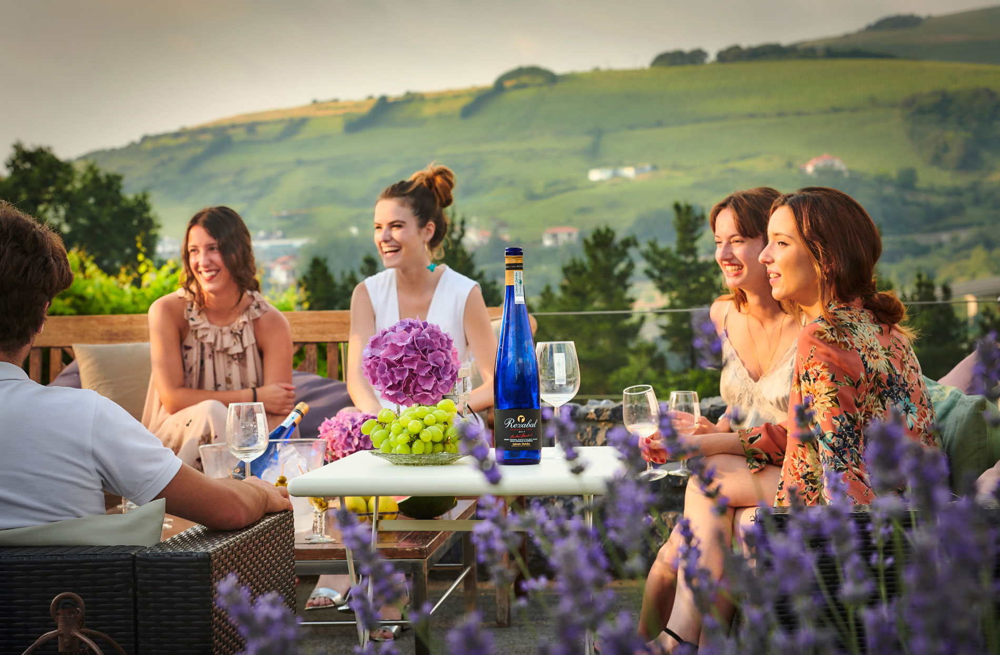
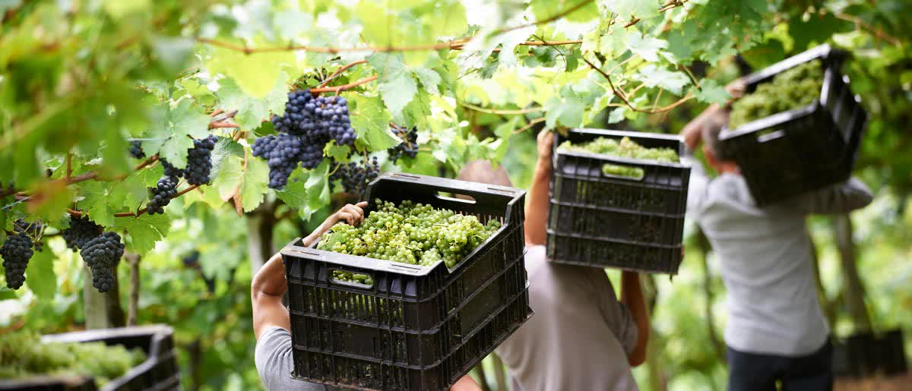
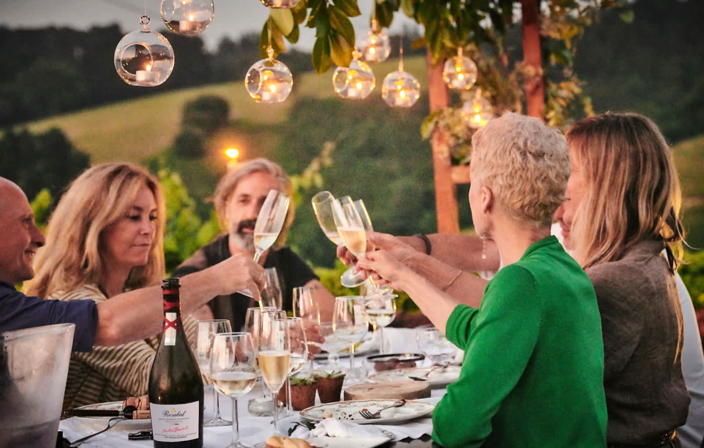
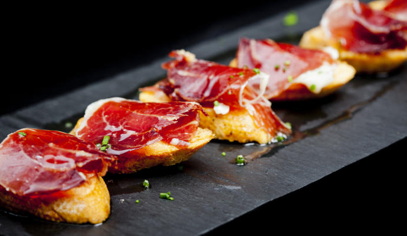
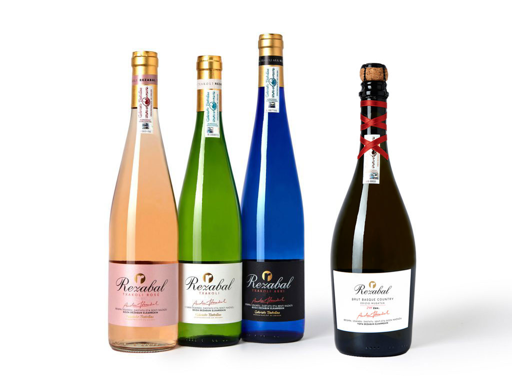
Ven a conocer los secretos de nuestro txakoli
Reservar visita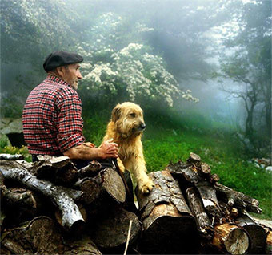
Nuestra historia
Tradición, experiencia y pasion compartidas a lo largo de tres generaciones.
Esfuerzo y pasion compartidos
Antes nuestros abuelos, después nuestros padres, y ahora los hijos: es una hermosa herencia que exige no solo dedicación, sino afecto y cariño. El aitona puede estar tranquilo porque sabe que volveran nuevas podas, se plantaran nuevas cepas, se recogeran de nuevo los racimos y seguiran fluyendo los mostos.
La bodega Txakoli Rezabal, ubicada en Zarautz y perteneciente a la Denominación de Origen Getariako Txakolina, cuenta con la mas avanzada tecnología utilizando los metodos mas tradiciónales. La tradición de siglos preserva las características del producto y la tecnología se pone al servicio de la calidad, con el fin de extraer su maxima riqueza a unas uvas privilegiadas que han sobrevivido a traves del tiempo.
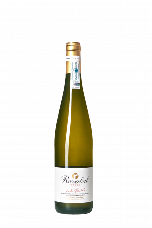
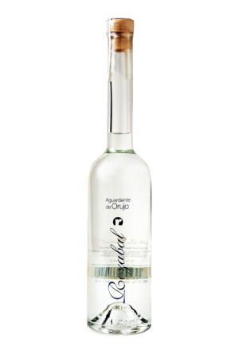
Factor humano
Armonia y compenetracion. Una bodega familiar dedicada en cuerpo y alma a esta pasion.
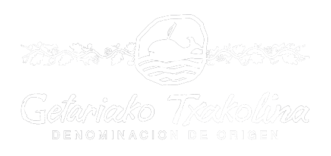
Armonia y compenetracion
Somos una bodega familiar, dedicada en cuerpo y alma a esta pasion para la cual llevamos años trabajando. Desde el principio hemos apostado por la calidad, el empleo de materias primas de la region, la innovacion y por los pequeños detalles que dan cómo resultado nuestro Txakoli Rezabal.
Para ello contamos con un equipo cualificado en distintas areas al que estamos realmente agradecidos. El estilo y la integridad de Ander Rezabal son esenciales para obtener lo mejor de cada cosecha.
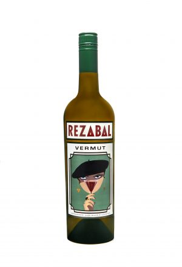
Cuidamos con cariño cada racimo
24 hectareas de emparrado alto en las mejores laderas de Zarautz, Getaria y Aia.
Las mejores laderas acariciadas por el mar
En las mejores laderas de Zarautz, Getaria y Aia, acariciadas por la brisa del mar, nuestras viñas respiran el salitre y se nutren de una tierra humeda que rezuma fertilidad, fuente de calidad y singularidad de nuestros txakolis.
Con una superficie de 24 hectareas en un sistema tradiciónal de emparrado alto, dos son las variedades autoctonas que definen nuestro txakoli: Hondarrabi Zuri y Hondarrabi Beltza. Nos llenan de orgullo los avances que hemos logrado en viticultura sostenible para preservar y proteger el medio ambiente.
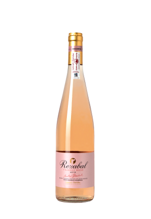
La elaboración
Dónde se define el Txakoli Rezabal. Sabiduria e integridad.
Dónde se define nuestro txakoli
El estilo y la integridad de Ander Rezabal son esenciales para obtener lo mejor de cada cosecha, destacando y ensalzando las características de la variedad de uva Hondarrabi Zuri y Hondarrabi Beltza.
Lentamente las uvas van ofreciendo su presente. Mosto que es a la vez lluvia y savia. La fermentación y sus transformaciones, controladas con las tecnologías mas avanzadas, van configurando el txakoli. Los aromas primarios de las uvas van mezclándose con los secundarios de fermentación. Se va definiendo y caracterizando asi el Txakoli Rezabal.
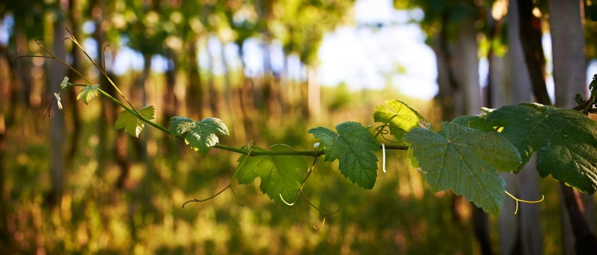
La colección
Afrutado, alegre, fresco. Descubre toda la gama de txakolis y destilados Rezabal.
Mirame, hueleme, pruebame
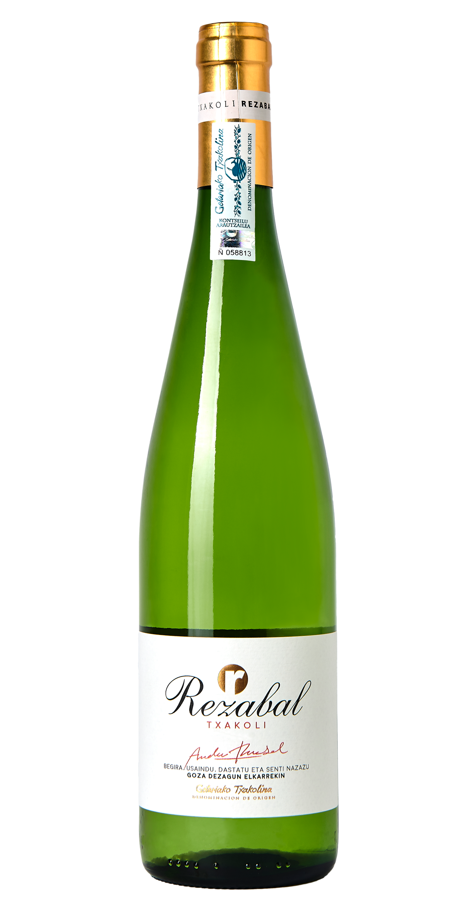
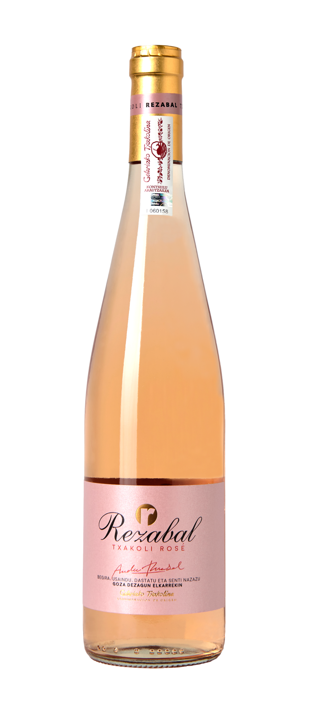
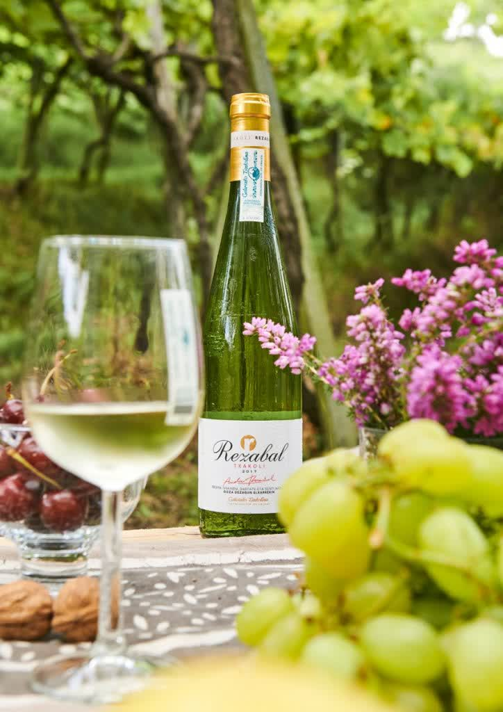
Txakoli Rezabal
El Txakoli Rezabal es un producto vivo, con una personalidad propia, y se expresa cómo las personas. Si de alguna manera podemos describir nuestro Txakoli Rezabal es "Alegre".
Notas de cata
Elaborado con uva Hondarrabi Zuri de nuestros vinedos propios. Color amarillo palido con reflejos verdosos. Nariz fresca con notas de fruta de hueso y citricos. En boca es fresco, ligero y muy agradable, con una acidez equilibrada que invita a seguir bebiendo.
Txakoli Rose
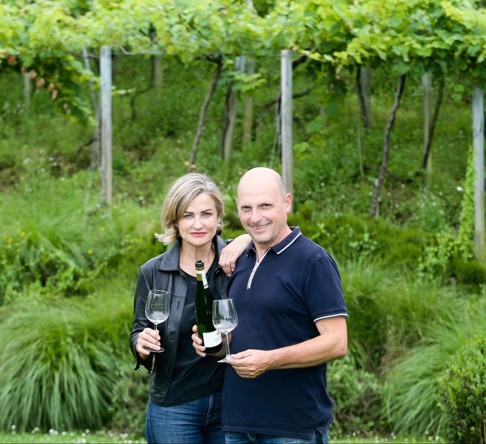
Al Txakoli Rezabal Rose le llamamos "musical" porque hay una buena armonía en las sensaciones. Muy fresco en nariz, con notas de fresas silvestres. Sedoso y cautivador el paso por boca, con un cuerpo equilibrado y femenino.
Maridaje
Ven y dejate inspirar por nuestro enologo. Conoce nuestra bodega y prueba por ti mismo la mejor variedad de maridajes con el Rose de Rezabal.
Txakoli Arri
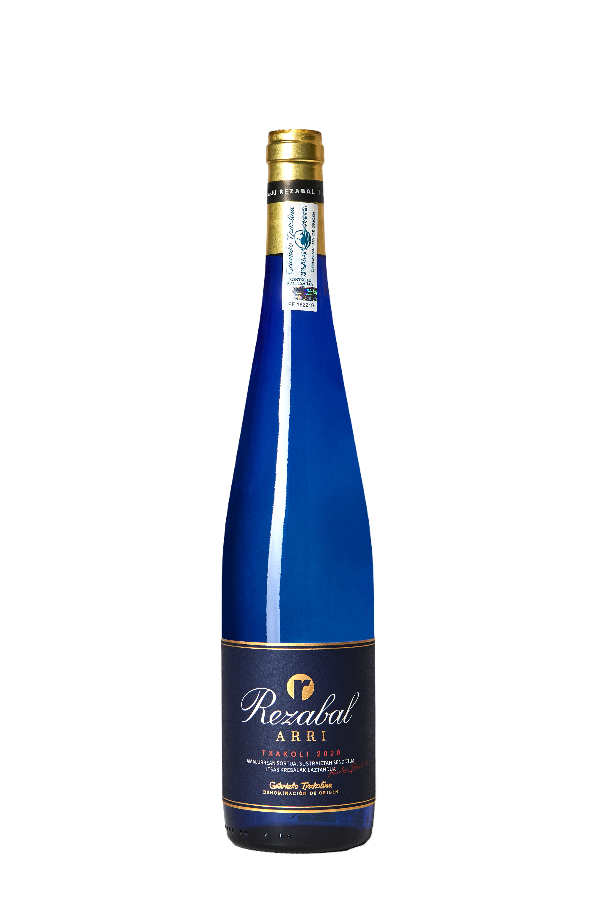
El Txakoli Rezabal Arri, seleccion especial, procedente de vinedos propios de mas de 50 años, elaborado con las variedades autoctonas Hondarrabi Zuri y Hondarrabi Beltza, recogido a mano.
Notas de cata
Un txakoli con mas cuerpo y complejidad. Matices elegantes que hablan de la edad de las cepas y del cuidado artesanal en cada paso de su elaboración. Ideal para maridar con pescados y mariscos de la costa vasca.
Brut Basque Country
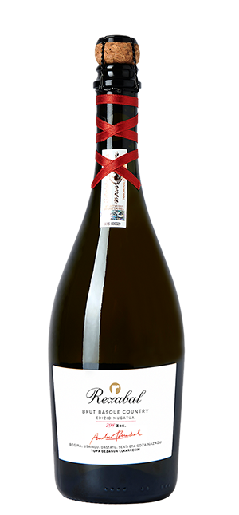
La eleccion del diseño Brut Basque Country, mediante la cinta roja que reviste el cuello de la botella, hace eco de nuestra cultura y tradición Euskal dantza.
Maridaje
Ven y dejate inspirar por nuestro enologo. Conoce nuestra bodega y prueba por ti mismo la mejor variedad de maridajes con nuestro espumoso.
Licor de Hierbas
El compromiso con el medio ambiente forma parte de nuestro trabajo. Después de cada vendimia aprovechamos el hollejo de nuestras variedades de uva Hondarrabi Zuri y Hondarrabi Beltza.
Realizamos una destilación lenta y controlada de manera tradiciónal mediante los sistemas Baño Maria para mejorar enormemente el control de la destilación y obtener el Licor Rezabal de elevada calidad, respetando el frescor y la fruta de las viñas Rezabal.
ContactarOrujo Rezabal
El compromiso con el medio ambiente forma parte de nuestro trabajo. Después de cada vendimia aprovechamos el hollejo de nuestras variedades de uva Hondarrabi Zuri y Hondarrabi Beltza, respetando el frescor y la fruta de las viñas Rezabal.
Notas de cata
Limpio y potente, con aromas de fruta madura. Graso, caliente y final de boca elegante.
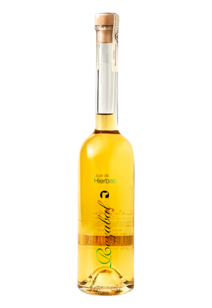
Visitaños y descubre
Disfrutar y conocer los secretos de nuestro txakoli mientras paseas por los vinedos.
Una cata entre vinedos
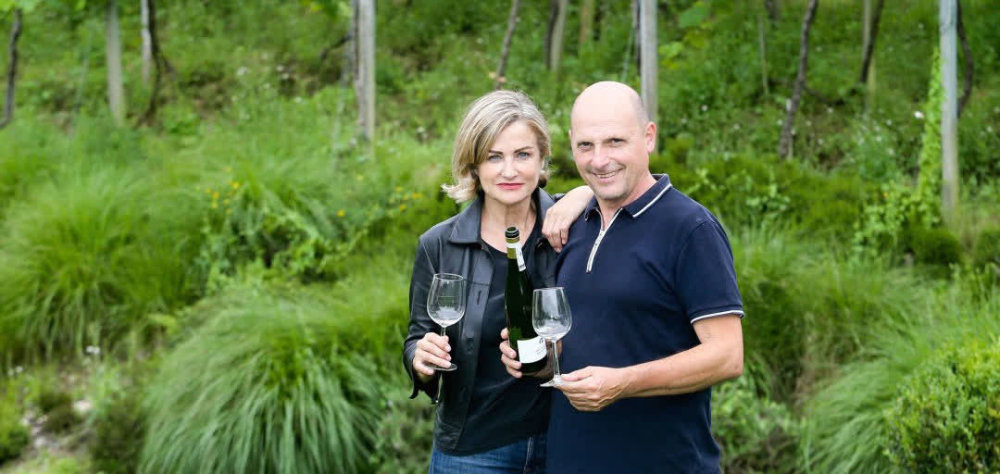
Cata entre vinedos
Disfrutar y conocer los secretos de nuestro txakoli mientras paseas por los vinedos en el marco incomparable de la bodega Rezabal en Zarautz sera una experiencia inolvidable. Acompanaños a conocer el secreto de nuestros vinedos desde su origen.
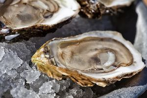
Experiencia gastronomica
Adentrate en el fabuloso universo del txakoli. Una experiencia unica y divertida en la que podras degustar una gama variada de pintxos de la tierra acompanados por nuestro Txakoli Rezabal, disfrutando de un paisaje increible.
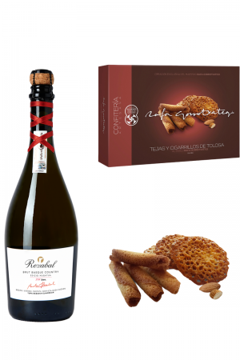
Eventos y bodas
Un enclave idilico rodeado de vinedos y con vistas al mar.
Un día inolvidable
Tienes algo en mente? Contactaños y planearemos a tu medida un día inolvidable para ti y tus invitados. La bodega ofrece un enclave idilico, rodeado de vinedos y con vistas al mar, perfecto para bodas, eventos corporativos y celebraciones privadas.
Contactar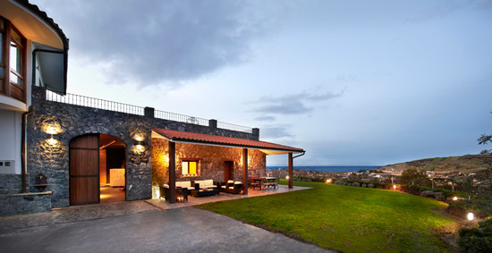
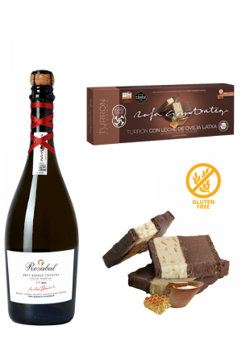
Contacta con nosotros
Nos gusta compartir contigo y ayudarte a cumplir tu deseo especial.
Asti Auzoa
20800 Zarautz, Gipuzkoa